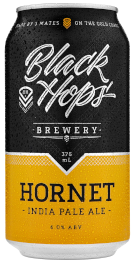

Hornet India Pale Ale
Black Hops Brewing
Burleigh Heads, Queensland
375mL bottle
6.0% Alc/Vol
Dry, angry and bitter, Hornet has some serious sting with a balancing aroma of stone and citrus fruits. This modern IPA drinks with a subtle sweetness and a sturdy presence of hop bitterness.
Grain: Pale Barley, Wheat, Light Crystal & Carapils
Hops: Dr Rudi, Victoria Secret, Motueka, Cascade & Mosaic
Yeast: American Ale
We are Black Hops, Australia's 2018 AIBA Champion Small Brewery, and 2019 RQFWS Australian Champion Brewery. Black Hops started as a simple idea over a beer with 3 good mates Dan, Eddie and Govs. That lead to the first Black Hops beer, the Eggnog Stout. A few years on, we have a team of 30+ legends, a brewery and a taproom in Burleigh Heads and Biggera Waters and our beer in 1,000+ venues and bottleshops Australia wide. Who knew beers at the pub could be so productive!